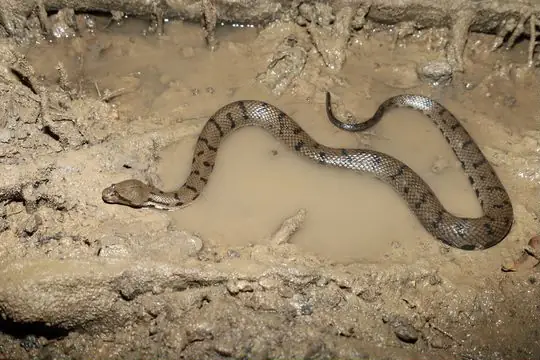
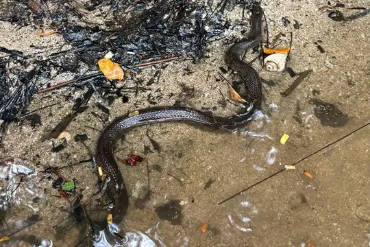

Cerberus
The genus Cerberus (family Homalopsidae) has 5 species in SnakeList (none venomous), recorded in 14 countries.
- 5species
- 5non-venomous
- 14countries
About the genus
A genus of the family Homalopsidae (mud snakes).
Species
Showing 5 species

Australian BokadamCerberus australis Dog-faced Water SnakeCerberus rynchops
Dog-faced Water SnakeCerberus rynchops- No photo yetLake Buhi BockadamCerberus microlepis

Palau BockadamCerberus dunsoni Southeast Asian BockadamCerberus schneiderii
Southeast Asian BockadamCerberus schneiderii
No snakes in Cerberus match.
About the genus Cerberus
- Family: Homalopsidae.
- Recorded in: Australia, Bangladesh, Cambodia, India, Indonesia, Malaysia, Myanmar, Palau, Papua New Guinea, Philippines, Singapore, Thailand, Timor-Leste, Vietnam.